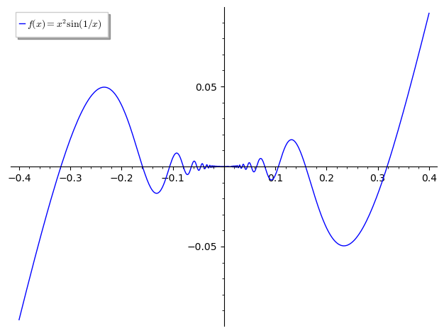
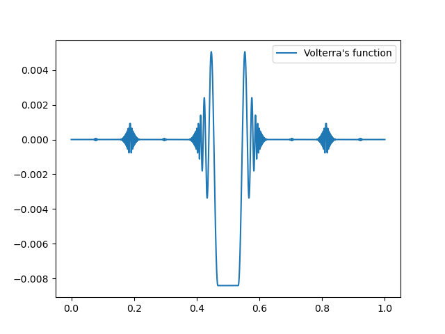

Section A.3 Differentiable functions with bounded derivative
In this section we will look at examples of functions that are differentiable everywhere, with bounded derivative, but for which the derivative is not Riemann integrable. By Exercise II.7.5.6 these functions will be absolutely continuous. Hence, the examples in this example do not satisfy the conclusion of the Fundamental Theorem of Calculus, Theorem II.1.1.1 (which uses Riemann integration), but the Fundamental Theorem of Lebesgue Integration, Theorem II.7.3.13, will apply.
Subsection Volterra’s function
In this section we will present Volterra’s function, introduced by Voltera in 1881 [19]. This example was likely had an influence on Lebesgue; it is cited in Lebesgue’s 1902 thesis[9]. Volterra presented this example in answer to a question of Dini [4] on when a function can be described as an integral of its derivative. Our presentation owes something to Stromberg’s text [14].
Consider the function \(f\) defined by
\begin{equation*}
f(x) = \begin{cases} x^2\sin\left(\frac{1}{x}\right) & x\neq 0,\\ 0 & x=0.\end{cases}
\end{equation*}
The function \(f\) is differentiable everywhere, with derivative
\begin{equation*}
f'(x) = \begin{cases} 2x\sin\left(\frac{1}{x}\right) - \cos\left(\frac{1}{x}\right)& x\neq 0,\\ 0 & x=0.\end{cases}
\end{equation*}

The function \(f(x) = x^2\sin(1/x)\) used to construct Volterra’s function in Section~\ref{subsec: Volterra}.
The idea behind the Volterra function is to create a function \(V\) which behaves on some suitably large set the way \(f\) behaves at \(\{0\}\text{.}\) Before defining \(V\text{,}\) we must first introduce the desired set.
We will construct a set \(A \subseteq [0,1]\) called the Smith-Volterra-Cantor set. This construction is very similar to the construction of the Cantor set in, Example II.3.2.3. The difference is, instead of removing the middle third from intervals, we will remove the middle quarter.
Let \(A_0 = [0,1]\text{.}\) Create \(A_1\) be removing the middle quarter from \(A_0\text{.}\) Thus
\begin{equation*}
A_1 = [0,3/8] \cup [5/8,1].
\end{equation*}
Create \(A_2\) be reomving the middle quarter from each of the two intervals in \(A_1\text{.}\) Thus
\begin{equation*}
A_2 = [0,5/32] \cup [7/32,3/8] \cup [5/8,25/32] \cup [27/32,1].
\end{equation*}
Continue in this manner to create a sequence of closed sets \(\{A_n\}_{n=1}^\infty\text{.}\) The {Smith-Volterra-Cantor} set is defined as
\begin{equation*}
A = \bigcap_{n=1}^\infty A_n.
\end{equation*}
Like the Cantor set \(C\text{,}\) \(A\) is nowhere dense. That is, \(A\) does not contain any intervals as subsets. However, unlike the Cantor set, \(A\) has positive Lebesgue measure. Indeed, if \(U = [0,1]\backslash A,\) then
\begin{equation*}
m(U) = \sum_{k=1}^\infty \frac{2^{k-1}}{4^k} = \sum_{k=1}^\infty \frac{1}{2^{k+1}} = \frac{1}{2}.
\end{equation*}
Thus \(m(A)= 1/2>0.\)
The Smith-Volterra-Cantor set \(A\) is closed, hence \(U = [0,1]\backslash A\) is open. Let \(U = \bigcup_{k=1}^\infty (a_k,b_k)\text{,}\) where the intervals \(\{(a_k,b_k)\}_k\) are disjoint. We define Volterra’s function \(V\) on \([0,1]\) as follows. For \(x \in A\text{,}\) let \(V(x) = 0\text{.}\) For each \(k\text{,}\) let \(c_k = \sup\{x \colon x \leq (b_k-a_k)/2,\ f'(x) = 0\}.\) For \(x \in (a_k,b_k)\) let
\begin{equation*}
V(x) = \begin{cases}
f(x-a_k) & x-a_k\leq c_k\\
f(c) & a_k+c_k \leq x \leq b_k - c_k\\
f(b_k - x) & b_k -x \leq c_k.
\end{cases}
\end{equation*}
An illustration of Volterra’s function is given in Figure~\ref{fig: Volterra2}. Since \(f\) is a continuous function, and \(f(0) = 0\text{,}\) \(V\) is a continuous function.

Volterra’s function.
\begin{equation*}
\frac{V(x+h)-V(x)}{h} = 0.
\end{equation*}
Otherwise, \(x+h \in U\text{,}\) i.e. \(x+h \in (a_k,b_k)\) for some \(k\text{.}\) Thus \(x+h = a_k + s\) for some natural number \(k\) and real \(s>0\text{.}\) If \(x+h = a_k + s \leq c_k\text{,}\) then
\begin{equation*}
\begin{aligned}
\frac{V(x+h)-V(x)}{h} &=\frac{V(x+h)}{h}
= \frac{V(a_k+s)}{h} \\
&= \frac{f(s)}{h} < \frac{f(s)}{s}.
\end{aligned}
\end{equation*}
If \(a+c_k< x + h < b_k - c_k\text{,}\) then
\begin{equation*}
\begin{aligned}
\frac{V(x+h)-V(x)}{h} &=\frac{V(x+h)}{h}
= \frac{V(a_k+s)}{h} \\
&= \frac{f(c_k)}{h} < \frac{f(s)}{s}.
\end{aligned}
\end{equation*}
Finally, if \(b_k-c_k\leq x+h < b_k\text{,}\) then \(x+h = b_k -t\) for some \(0<t< c_k\text{,}\) and \(t < h\text{.}\) Thus
\begin{equation*}
\begin{aligned}
\frac{V(x+h)-V(x)}{h} &=\frac{V(x+h)}{h}
= \frac{V(b_k-t)}{h} \\
&= \frac{f(t)}{h} < \frac{f(t)}{t}.
\end{aligned}
\end{equation*}
It follows that
\begin{equation*}
\lim_{h\rightarrow 0^+}\frac{V(x+h)-V(x)}{h} = 0.
\end{equation*}
One can similarly show that
\begin{equation*}
\lim_{h\rightarrow 0^-}\frac{V(x+h)-V(x)}{h} = 0,
\end{equation*}
\begin{equation*}
|f'(x)| = |2x \sin(1/x) - \cos(1/x)| \leq 2|x| + 1,
\end{equation*}
Fix now \(x \in A\text{.}\) For each \(n\text{,}\) \((x-1/n, x+1/n) \cap U \neq \emptyset.\) Hence, there is an \(x_n \in (x-1/n, x+1/n) \cap U\) such that \(V'(x_n) = 1.\) As \((x_n)_n\) converges to \(x\text{,}\) and \((V'(x_n))_n\) does not converge to \(V'(x) =0\text{,}\) \(V'\) is not continuous at any point in \(A\text{.}\)
Note that since \(V\) is continuous and \(V'\) is bounded, \(V\) is absolutely continuous by Exercise II.7.5.6. Hence \(V'\) is Lebesgue integrable. However, since the set of discontinuities of \(V'\) has Lebesuge measure \(m(A) = 1/2 > 0\text{,}\) it follows from Theorem II.3.1.9 that \(V'\) is not Riemann integrable.